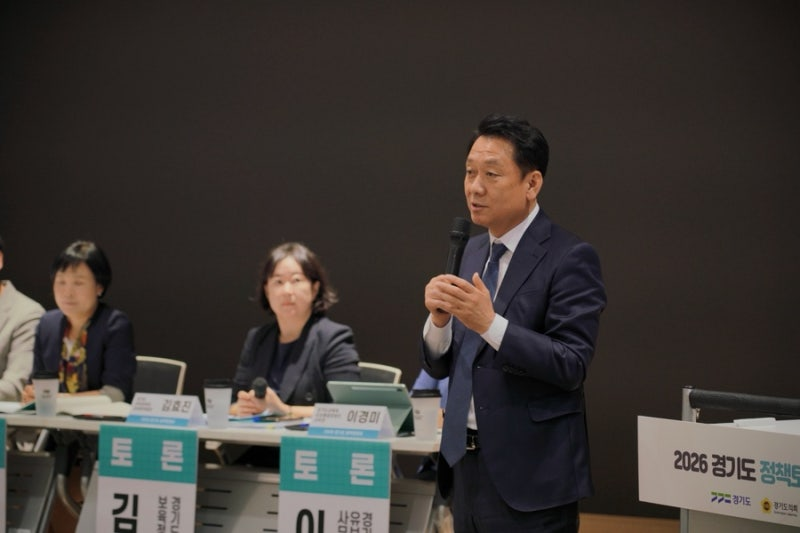
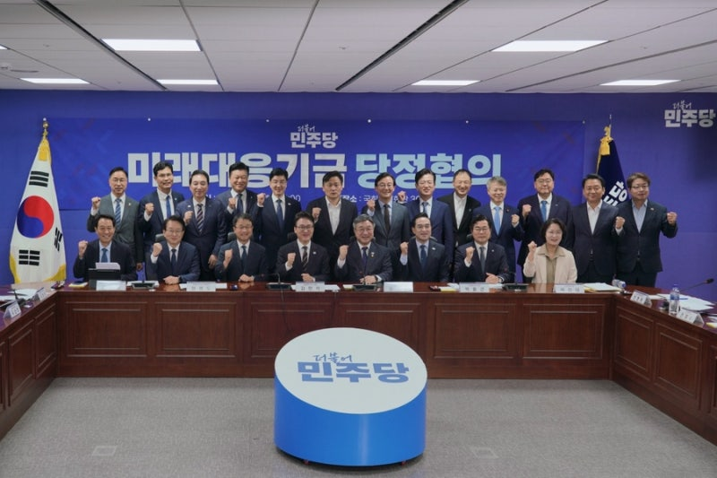
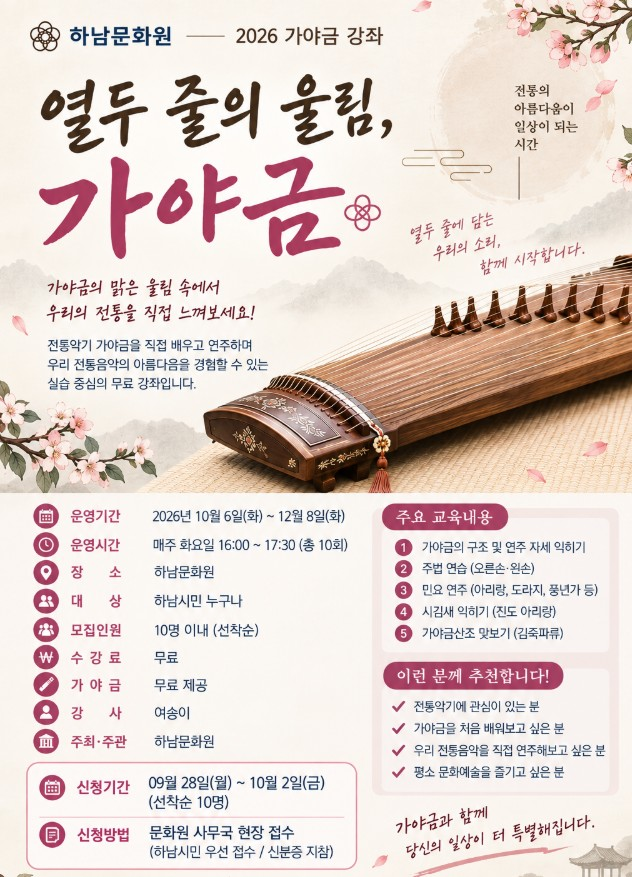
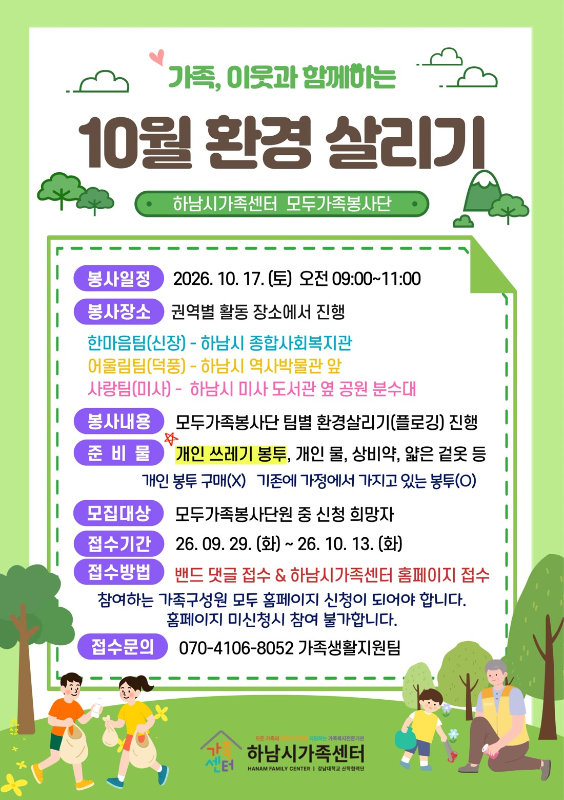

49호 | 2026년 9월 30일 발행
📌 이번 호 주요 목차
 우리동네 국회의원 이광재
우리동네 국회의원 이광재
📝 현장일지
이광재, "아이의 행복, 선생님의 행복에서 시작합니다"… 유보통합 시대 경기도 영유아 교육·보육 토론회 참석
하남시가족어울림센터에서 열린 「유보통합 시대, 경기도 영유아 교육·보육 통합지원체계 구축 방안」 토론회에 함께했습니다. 0세부터 8세까지는 아이의 성장과 발달에 매우 중요한 시기인 만큼, 초·중·고 교육 못지않게 영유아 교육과 돌봄에 더 많은 관심이 필요합니다. 아이들이 행복하려면 가장 가까이에서 돌보는 선생님도 행복해야 합니다. 유치원과 국공립·민간 어린이집 사이의 처우 격차를 줄이고, 어린이집 무상급식 확대 방안도 살펴보고 있습니다. 유보통합을 계기로 하남에서 새로운 교육·보육 정책을 먼저 시도해 좋은 모델을 만드는 방안도 고민하겠다고 밝혔습니다. 밤늦게 아이가 아파도 안심하고 찾을 수 있는 24시간 어린이병원이 하남에서 운영될 수 있도록 의료진 지원 등 필요한 방안을 경기도·하남시와 함께 챙기겠다고 약속했습니다.

📌 출처: 이광재 공식 네이버 블로그
📝 현장일지
이광재, "지방정부 동지들의 강력한 지원군이 되겠습니다"… 전국 더불어민주당 지자체장들과 한자리에
6·3 지방선거에서 당선된 전국 더불어민주당 지자체장들이 한자리에 모였습니다. 이광재 의원은 새로 당선된 단체장들이 대표 브랜드 정책을 제대로 선보이고 주민을 위해 소신껏 일할 수 있는 토대가 마련돼야 한다고 강조했습니다. 현장에서는 새로 출범하는 미래대응기금과 지방교부세를 둘러싼 우려의 목소리가 나왔고, 이 의원은 재정당국이 지자체장들의 절박한 고언을 가벼이 들어선 안 된다고 밝혔습니다. 부산·울산·강원의 성공이 지역주의를 넘어서는 희망이 되고, 광주·전남 반도체 클러스터와 전북 새만금 투자, 충청권과 세종 행정수도, 인천·경기의 경쟁력 강화가 결실을 맺어야 대한민국 경제가 다시 일어선다며, 국회 예결위원장으로서 지방정부의 강력한 지원군이 되겠다고 다짐했습니다.

📌 출처: 이광재 공식 네이버 블로그
📰 언론보도
[아시아경제] "아이 태어나면 1억씩 국부펀드 투자"… 이광재, '국민생애기본자산' 제안
이광재 의원(국회 예산결산특별위원장)이 추석 연휴 나흘간 SNS를 통해 출생부터 노후까지 국가가 기본자산 형성을 돕는 '국민생애기본자산' 구상을 내놓았습니다. 신생아 1명당 1억 원을 국부펀드에 투자하면 연평균 7% 수익률 기준 20세에 약 3억 8,000만 원, 65세에 약 60억 원으로 불어나며, 20세에 1억 원·65세에 40억 원을 지급하고 나머지는 국가펀드로 되돌리는 방식입니다. 실직·중증질환·돌봄 같은 위기 때에는 자산을 인출할 수 있습니다. 연간 출생아 30만 명 기준 매년 약 30조 원이 필요한데, 이 의원은 800조 원 국가예산의 5%를 구조조정하면 40조 원을 마련할 수 있고 불용액·공기업 배당·국부펀드 수익 등도 재원이 될 수 있다고 설명했습니다. 이 의원은 "AI 시대의 급격한 자본 격차와 100세 수명 시대에 기존 복지 시스템만으로는 국민을 온전히 지키기 어렵다"고 밝혔습니다.
📌 출처: 아시아경제 (문혜원 기자)
📰 하남 지역 주요 뉴스
📰 시정/재정
하남시 비상재정체제 전환… 내년 세출 요구액이 세입보다 1,272억 원 많아
하남시가 2027년도 예산 편성을 앞두고 비상재정체제에 들어갔습니다. 각 부서가 요구한 지출 예상액이 수입보다 1,272억 원 많기 때문입니다. 자체 수입 증가세가 둔화되고 도비 지원이 줄어들 가능성이 있는 데다, 대규모 투자사업의 운영비와 복지·공약·현안사업 재원 수요가 늘어난 것이 원인입니다. 시는 기존 사업의 우선순위를 다시 따져 규모를 줄이고 신규·증액 사업은 최소화하는 한편, 지방세 체납 징수 강화와 법인 세무조사, 세외수입 관리로 세입을 늘릴 계획입니다. 취약계층을 위한 필수 지원은 유지합니다. 이현재 하남시장은 "세입보다 세출이 1,200억 원 이상 많은 엄중한 상황"이라고 밝혔습니다.
📌 출처: 파이낸셜뉴스 (김경수 기자)
📰 생활/사회
하남미사 롯데캐슬 헤븐시티 관리운영 의혹… 상가 임대인들 경찰에 수사의뢰
하남미사 롯데캐슬 헤븐시티 상가 임대인들이 관리인을 상대로 경찰에 수사를 의뢰했습니다. 임대인들은 지난해 3월 관리위원회 구성 절차 없이 위탁관리업체가 선정됐고, 관리규약에 따른 입찰과 구분소유자 의견수렴·집회 절차도 지켜지지 않았다고 주장합니다. 관리비를 집행하면서 통장과 OTP카드를 위탁업체 관계자에게 맡기고, 결재나 지출결의서 없이 돈을 보냈다는 의혹도 제기했습니다. 임대인 측은 배임이나 관리 부실이 확인되면 손해배상 등 법적 책임을 묻겠다는 입장이며, 의혹의 사실 여부는 수사를 통해 가려질 예정입니다.
📌 출처: 경기신문 (김태호 기자)
📰 문화/축제
하남예총, 하남예술제 새단장… 10월 3일 스타필드 야외광장서 '리본: 더 하남' 첫선
(사)한국예총 하남지회가 하남예술제를 '리본: 더 하남(Reborn: the Hanam)'이라는 새 이름으로 바꿔 10월 3일 하남스타필드 야외광장에서 엽니다. 'Reborn'은 하남예총과 지역 예술이 새롭게 태어난다는 뜻이고, '리본'에는 묶음과 연결의 의미를 담았습니다. 실내에서 회원 작품을 발표하던 방식에서 벗어나 유동인구가 많은 야외광장으로 무대를 옮겨, 시민 누구나 머물며 즐기는 개방형 축제로 바뀝니다. 산하 8개 지부의 공연·전시·체험 프로그램과 전문 예술인 공연, 청소년 무대, 소규모 아트페어, 공공조형 설치미술이 함께 펼쳐집니다. 김부경 하남예총 회장은 "많은 시민이 일상 속 문화예술의 즐거움을 만끽하길 바란다"고 말했습니다.
📌 출처: 중부일보 (이준도 기자)
💬 하남 맘카페 HOT 이슈
이번 주 하남 지역 맘카페(미사맘스클럽, 하남맘, 하강맘, 하남교산맘, 교산라이프 등)에서 많이 오르내린 HOT 이슈 TOP 3입니다.
1️⃣ [교통·신도시] "위례 철도는? 9호선은? 본청약은?"… 교통·신도시 일정에 쏠린 관심
현황: 하남교산맘에는 "위례 신도시 철도 사업, 희소식 기대해 볼까요?"라는 글이 올라와 출퇴근과 아이들 등하교 불편을 덜어줄 철도에 대한 기대가 모였습니다. 위례 풍경채 어바니티 입주자 모임에서는 버스정류장 위치 조정과 하남 8번 버스 회차지점 연장·정차 추가 등 대중교통 개선안 3건을 하남일보 기자에게 전달했다는 글이 공유됐습니다. 강동하남남양주선(9호선 연장) 2·5공구 사업자 선정이 늦어지고 있다는 소식, 교산신도시 본청약이 지연되고 있다는 글(교산라이프)도 함께 관심을 받았습니다.
💡 주민 포인트: 정류장 위치나 노선처럼 생활 속 교통 불편은 하남시 누리집 민원 창구나 국민신문고로 구체적인 위치·시간대를 적어 제안하면 검토가 한결 수월합니다. 철도·청약 일정은 추측성 글보다 국토교통부·LH·하남시 공식 발표를 확인하세요.
💬 주민 반응: "좋은 소식이 빨리 들렸으면 좋겠다"는 기대와 함께, 일정이 자꾸 밀리는 데 대한 아쉬움도 적지 않았습니다.
📌 출처: 네이버 카페 (하남교산맘, 위례 풍경채 어바니티 입주자 모임, 교산라이프, 왕숙맘)
2️⃣ [육아·교육] "초1 돌봄교실 보낼까요?"… 유치원·어린이집·방과후 선택 고민 시즌
현황: 하남맘에는 감일동 초등 1학년 방과후 돌봄교실을 두고 "1학년 때는 돌봄교실이 마음 편하다"는 의견과 "아이가 지루해해서 학원으로 연계하는 게 낫다"는 의견 사이에서 고민하는 글이 올라왔습니다. 미사맘스클럽에서는 "미사는 경쟁이 치열해 거의 1지망에서 마감된다"며 2지망으로 쓸 만한 유치원을 묻는 글, 미사로 이사 오며 어린이집과 유치원 중 어디를 보낼지 고민하는 글이 이어졌습니다. 어린이집 첫 운동회를 앞두고 "아빠들 계주도 하나요?"라는 설렘 섞인 질문도 눈에 띄었습니다.
💡 주민 포인트: 유치원 모집 일정과 지원 방법은 교육청 '처음학교로' 누리집 공지를 미리 확인해 두세요. 돌봄교실·방과후 프로그램 운영 방식은 학교마다 달라, 학교 설명회나 가정통신문을 챙겨 보는 것이 가장 정확합니다.
💬 주민 반응: 선배맘들이 직접 겪은 경험담을 댓글로 나누며 "아이 성향에 맞추는 게 제일"이라는 조언이 많았습니다.
📌 출처: 네이버 카페 ([하남맘], 미사강변도시 미사맘스클럽)
3️⃣ [나들이·문화] "날씨 좋은 10월, 밖에서 먹고 놀아요"… 가족 외식·문화 행사 추천 봇물
현황: 선선한 날씨에 미사맘스클럽에는 "10월 말 부모님 모시고 야외 테라스 있는 고깃집에 가고 싶다"며 수변공원 쪽 식당을 묻는 글과, 미취학 아이와 가기 좋은 놀이방 식당을 추천해 달라는 글이 올라왔습니다. 하강맘에는 미사도서관에서 오늘(30일) 저녁 열리는 색채심리·명화 강연을 소개하는 글이 공유되는 등 가까운 문화 프로그램 정보도 활발히 오갔습니다.
💡 주민 포인트: 10월 3일(개천절)에는 하남스타필드 야외광장에서 새단장한 하남예술제 '리본: 더 하남'이 열립니다(위 지역 주요 뉴스 참고). 하남문화원 가야금 무료강좌 접수도 10월 2일(금)까지이니 아래 ALL IN 하남라이프를 확인하세요.
💬 주민 반응: "가을 가기 전에 야외에서 한 번 모이자"는 댓글과 함께 동네 식당·카페 추천이 꼬리를 물었습니다.
📌 출처: 네이버 카페 (미사강변도시 미사맘스클럽, 하강맘)
🎭 ALL IN 하남라이프
2026년 9월 30일 기준 한눈에 보는 하남시 최신 문화·행사·교육 안내 가이드
🎶 ~2026.10.02(금) 접수 | 무료 강좌
하남문화원 2026 가야금 강좌 「열두 줄의 울림, 가야금」
"전통의 아름다움이 일상이 되는 시간"
가야금을 직접 배우고 연주하며 우리 전통음악의 아름다움을 느껴보는 실습 중심의 무료 강좌입니다. 연주 자세와 오른손·왼손 주법부터 아리랑·도라지·풍년가 같은 민요 연주, 진도아리랑 시김새, 가야금산조 맛보기까지 차근차근 배웁니다. 가야금도 무료로 빌려줍니다.
🗓 운영기간: 10월 6일 ~ 12월 8일 매주 화요일 16:00 ~ 17:30 (총 10회)
📍 장소: 하남문화원
👥 대상: 하남시민 누구나, 10명 이내 (선착순)
💰 수강료: 무료 (가야금 무료 제공) / 강사 여송이
📝 신청: 9월 28일(월) ~ 10월 2일(금) 문화원 사무국 현장 접수 (하남시민 우선, 신분증 지참)
☎️ 문의: 하남문화원 사무국 031-795-1020
가야금을 직접 배우고 연주하며 우리 전통음악의 아름다움을 느껴보는 실습 중심의 무료 강좌입니다. 연주 자세와 오른손·왼손 주법부터 아리랑·도라지·풍년가 같은 민요 연주, 진도아리랑 시김새, 가야금산조 맛보기까지 차근차근 배웁니다. 가야금도 무료로 빌려줍니다.
🗓 운영기간: 10월 6일 ~ 12월 8일 매주 화요일 16:00 ~ 17:30 (총 10회)
📍 장소: 하남문화원
👥 대상: 하남시민 누구나, 10명 이내 (선착순)
💰 수강료: 무료 (가야금 무료 제공) / 강사 여송이
📝 신청: 9월 28일(월) ~ 10월 2일(금) 문화원 사무국 현장 접수 (하남시민 우선, 신분증 지참)
☎️ 문의: 하남문화원 사무국 031-795-1020

📌 출처: 하남문화원
🌱 2026.10.17(토) 09:00 | 가족 봉사
가족, 이웃과 함께하는 「10월 환경 살리기」 (모두가족봉사단)
"가족이 함께 걸으며 동네를 깨끗하게!"
하남시가족센터 모두가족봉사단이 팀별로 동네를 걸으며 쓰레기를 줍는 플로깅 활동을 합니다. 쓰레기 봉투는 새로 사지 말고 집에 있는 봉투를 가져오면 됩니다.
🗓 일시: 2026년 10월 17일(토) 09:00 ~ 11:00
📍 장소: 한마음팀(신장) 하남시종합사회복지관 / 어울림팀(덕풍) 하남역사박물관 앞 / 사랑팀(미사) 미사도서관 옆 공원 분수대
👥 대상: 모두가족봉사단원 중 신청 희망자
🎒 준비물: 개인 쓰레기 봉투(집에 있는 봉투), 물, 상비약, 얇은 겉옷
📝 접수: 9월 29일(화) ~ 10월 13일(화), 밴드 댓글 + 가족센터 홈페이지 신청 (참여 가족 모두 홈페이지 신청 필수)
☎️ 문의: 가족생활지원팀 070-4106-8052
하남시가족센터 모두가족봉사단이 팀별로 동네를 걸으며 쓰레기를 줍는 플로깅 활동을 합니다. 쓰레기 봉투는 새로 사지 말고 집에 있는 봉투를 가져오면 됩니다.
🗓 일시: 2026년 10월 17일(토) 09:00 ~ 11:00
📍 장소: 한마음팀(신장) 하남시종합사회복지관 / 어울림팀(덕풍) 하남역사박물관 앞 / 사랑팀(미사) 미사도서관 옆 공원 분수대
👥 대상: 모두가족봉사단원 중 신청 희망자
🎒 준비물: 개인 쓰레기 봉투(집에 있는 봉투), 물, 상비약, 얇은 겉옷
📝 접수: 9월 29일(화) ~ 10월 13일(화), 밴드 댓글 + 가족센터 홈페이지 신청 (참여 가족 모두 홈페이지 신청 필수)
☎️ 문의: 가족생활지원팀 070-4106-8052

📌 출처: 하남시가족센터
🏛️ 공공기관 소식지
2026년 9월 30일 기준 하남시 공공기관 주요 공고·신청 안내입니다.
🤝 하남시 복지정책과 | 복지서비스
2026년 4분기 지역사회서비스투자사업 이용자 모집
"심리지원부터 장애인 운동까지, 10개 사회서비스 이용자를 모집합니다"
아동·가족·어르신·장애인 등에게 필요한 사회서비스를 지원하는 사업으로, 10개 서비스에서 모두 250명(신규·재판정 포함)을 모집합니다. 1인당 1개 서비스만 지원받을 수 있고, 서비스별 소득·연령·장애 등록 기준이 적용됩니다.
📋 서비스: 우리아이심리지원(70명), 아동비전형성지원(25명), 우리가족통합심리지원(25명), 노인맞춤형인지정서지원(10명), 시각장애인안마(45명), 성인심리지원(20명), 산모심리상담지원(10명), 정신건강토탈케어(20명), 장애인맞춤형운동(22명), 장애인보조기기렌탈(3명)
🗓 신청기간: 2026년 10월 12일(월) ~ 10월 16일(금)
📝 신청방법: 거주지 행정복지센터 방문 신청
📞 문의: 하남시 복지정책과 031-790-5980
아동·가족·어르신·장애인 등에게 필요한 사회서비스를 지원하는 사업으로, 10개 서비스에서 모두 250명(신규·재판정 포함)을 모집합니다. 1인당 1개 서비스만 지원받을 수 있고, 서비스별 소득·연령·장애 등록 기준이 적용됩니다.
📋 서비스: 우리아이심리지원(70명), 아동비전형성지원(25명), 우리가족통합심리지원(25명), 노인맞춤형인지정서지원(10명), 시각장애인안마(45명), 성인심리지원(20명), 산모심리상담지원(10명), 정신건강토탈케어(20명), 장애인맞춤형운동(22명), 장애인보조기기렌탈(3명)
🗓 신청기간: 2026년 10월 12일(월) ~ 10월 16일(금)
📝 신청방법: 거주지 행정복지센터 방문 신청
📞 문의: 하남시 복지정책과 031-790-5980
📌 출처: 하남시청 (복지정책과)
🔥 정책 안내 (산업통상부) | 에너지 복지
취약계층 동절기 도시가스 공급 중단 유예 (2026년 10월 ~ 2027년 5월)
"요금이 밀려도 겨울철 난방은 끊기지 않습니다"
취약계층이 도시가스 요금을 연체하더라도 겨울철에는 가스 공급을 끊지 않도록 유예하는 제도입니다. 에너지 복지를 위해 매년 시행되며, 대상 가구는 별도 신청 절차 없이 적용됩니다.
🗓 유예기간: 2026년 10월 ~ 2027년 5월 (8개월)
👥 대상: 생계·의료·교육·주거급여 수급자, 차상위계층 및 차상위계층확인서 발급 가구
📞 문의: 코원에너지서비스 고객센터 — 하남시 전역 1800-4613 / 학암동·감일동·감이동 1800-4598 / 미사2동 1800-4526
취약계층이 도시가스 요금을 연체하더라도 겨울철에는 가스 공급을 끊지 않도록 유예하는 제도입니다. 에너지 복지를 위해 매년 시행되며, 대상 가구는 별도 신청 절차 없이 적용됩니다.
🗓 유예기간: 2026년 10월 ~ 2027년 5월 (8개월)
👥 대상: 생계·의료·교육·주거급여 수급자, 차상위계층 및 차상위계층확인서 발급 가구
📞 문의: 코원에너지서비스 고객센터 — 하남시 전역 1800-4613 / 학암동·감일동·감이동 1800-4598 / 미사2동 1800-4526
📌 출처: 하남시청 / 산업통상부
© 2026 우리동네 진짜일꾼 이광재